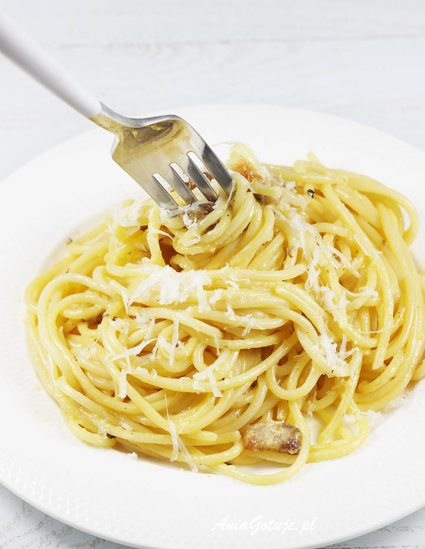
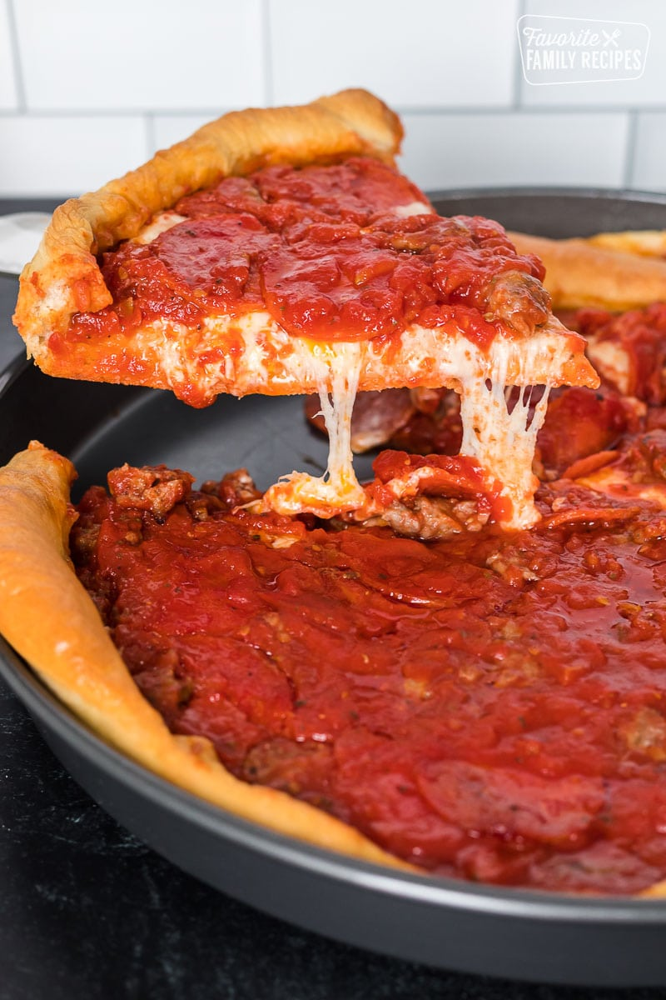
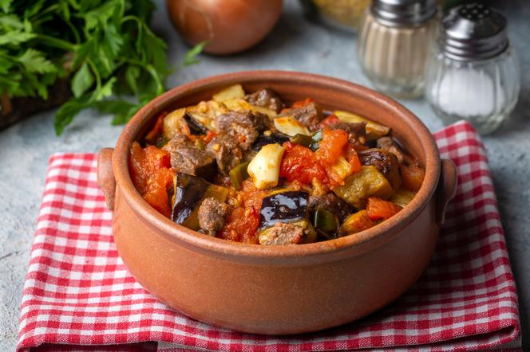
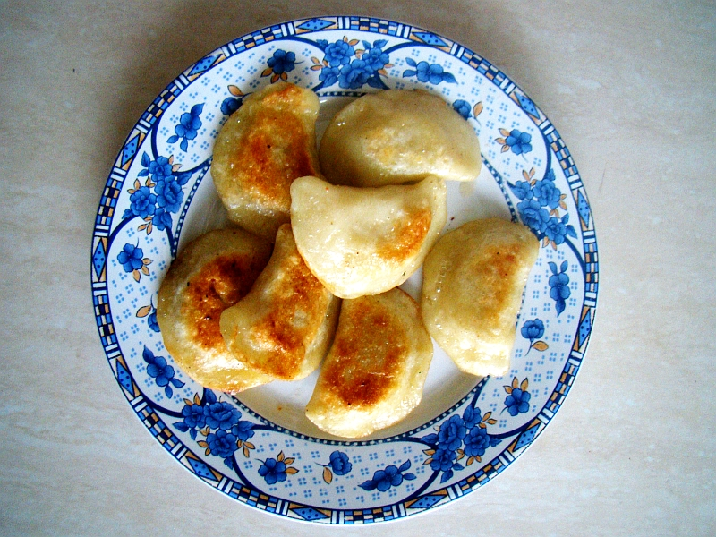
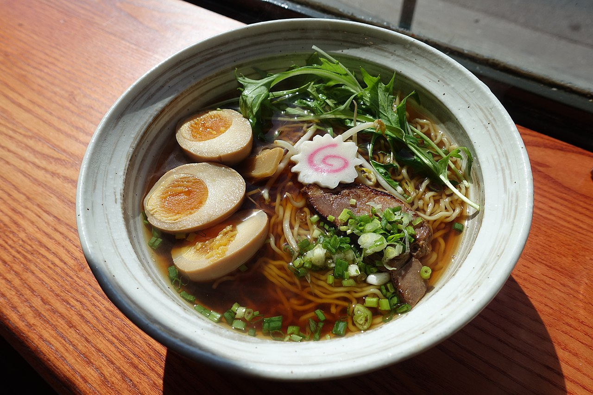

Dania kuchni świata
Włochy
Pasta alla carbonara (spaghetti alla carbonara) potrawa kuchni włoskiej złożona z makaronu, jajek, pancetty lub guanciale, sera pecorino romano lub parmezanu oraz czarnego pieprzu. Niepoprawnym jest mówienie o „sosie carbonara”, ponieważ makaron i pozostałe składniki stanowią tu nierozerwalną całość.
W niektórych przepisach zamiast całych jaj używa się samych żółtek. Pieprz jest obowiązkowy. Najpowszechniej używanym makaronem jest spaghetti. Tuż za nim plasuje się bucatini. Używa się też m.in. makaronu w kształcie tzw. rurek (penne, rigatoni, maccheroni).
United States of America
Chicago-style pizza, inaczej zwana też deep-dish pizza, to pizza na grubym cieście pochodząca z Chicago. Pieczona w głębokiej blasze, przypomina bardziej ciasto niż tradycyjną pizzę. Na samym spodzie pizzy kładzie się ser, później pozostałe dodatki, najczęściej kiełbasę (ang. Italian sausage), a dopiero ostatnia warstwa to sos pomidorowy (ang. tomato sauce). Chicago-style pizza prawdopodobnie została wynaleziona w Pizzerii Uno w Chicago w 1943 i obecnie cieszy się popularnością w całych Stanach Zjednoczonych.
Turcja

Kebab to turecka potrawa, która cieszy się ogromną popularnością Polaków. Jest wiele rodzajów kebabów, dzięki temu każdy może znaleźć coś dla siebie. Dobrej jakości mięso i świeże surówki, a także pyszne sosy gwarantują, że kebab będzie pełnowartościowym, sycącym posiłkiem. Opcją dla osób, które ograniczają spożywanie mięsa, jest kebab z falafelami, czyli smażonymi kuleczkami z ciecierzycy.
Bługaria
Gjuwecz jest to ogólna nazwa bułgarskich potraw, przygotowanych w glinianym naczyniu (o tej samej nazwie), które umożliwia długie duszenie potraw w niewysokich temperaturach.
Głównym składnikiem potrawy są warzywa oraz mięso (opcjonalne). Poniżej proponujemy przepis na przepyszny gjuwecz z mięsem.
Polska
Pierogi są uważane za pracochłonną potrawę mączną. Są to kawałki cienko rozwałkowanego ciasta makaronowego z farszem słonym lub słodkim, uformowane na kształt trójkąta lub półkola i ugotowane w wodzie (pierogi gotowane) lub rzadziej upieczone (pierogi pieczone) czy usmażone.
Według Polaków i cudzoziemców pierogi są uznawane za tradycyjną potrawę staropolskiej i współczesnej kuchni polskiej, chociaż ich ojczyzną są Chiny. Maleńkie pierożki nazywa się w języku polskim uszkami.
Japonia
Rāmen (jap. 拉麺 bądź ラーメン) danie kuchni japońskiej, składające się z makaronu, bulionu (wywaru, sūpu, dashi-jiru) i innych składników.
Rāmen trafił do Japonii w XIX wieku z Chin. Po II wojnie światowej stał się jedną z najpopularniejszych, niedrogich i powszechnie dostępnych potraw. Restauracje z rāmenem (rāmen-ya) są w całym kraju, serwując niezliczone regionalne odmiany.